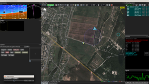
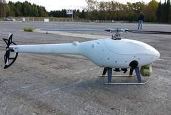

Система автоматического управления САУ9.1
|
Шифр САУ9.2 ГШФЮ.468339.91.000 |
Доп. информация Документация |
Концепция
Основные идеи и принципы, которыми мы руководствуемся при разработке и производстве Системы Автоматического Управления (автопилота) :
- Минимизация участия оператора в процессе выполнения задачи беспилотным аппаратом, от предварительной подготовки и начала движения до полной остановки всех систем. Количество параметров телеметрии при полёте, например, может доходить до 200, и их анализ в режиме реального времени уходит за грани человеческих возможностей. Однако же, своевременность и правильность принятия решений во время движения объекта имеют критическое значение, поэтому максимальная автоматизация и возложение функций обработки данных на современные микропроцессоры является закономерным шагом в развитии систем управления движением. Именно полная автоматизация процесса контроля движением позволяет достигнуть максимальной эффективности и безопасности при выполнении задач беспилотным аппаратом;
- Модульность. Модульная архитектура позволяет при необходимости легко изменять и расширять конфигурацию системы, например, для добавления функционала или чтобы повысить отказоустойчивость дублируя необходимые блоки. Также возможна интеграция новых типов полезной нагрузки;
- Универсальность. Изначально система разрабатывалась как универсальная система управления подвижными объектами способная управлять и летающим крылом из класса ультралёгких ЛА, и бензиновым беспилотным вертолетом, и полноразмерным катером;
- Постоянная эволюция системы. Наши специалисты последовательно работают над улучшением алгоритмов автопилота, схемотехники, конструктивной части, программного обеспечения станции управления. Мы получаем и анализируем данные о реальных испытаниях в различных условиях, произведённых как нашими испытателями, так и клиентами. Кроме того, постоянно отслеживаются и внедряются новые технологии, чипы, сенсоры, материалы;
- Продукция производится по авиационным стандартам и соответствует высокой степени защиты от воздействий окружающей среды и других неблагоприятных факторов.
Назначение
Система САУ9.1 предназначена для автоматического, полуавтоматического и ручного управления подвижным объектом.
В настоящий момент разработаны конфигурации системы для следующих видов беспилотных аппаратов:
- Самолеты для взлёта с полосы, полёта и посадки на полосу в полностью автоматическом режиме
- Вертолеты с взлётом, полётом и посадкой в полностью автоматическом режиме
- Катера
- Аппараты легче воздуха
- Наземные аппараты (автомобили, лёгкие танки и др.)
Система обеспечивает подключение и управление практически любым типом полезной нагрузки по интерфейсам:
- 1-Wire
- CAN
- TTL UART
- RS232
- RS485
Пример конфигурации системы САУ9.1 для аппарата самолетного типа с автоматическим взлетом и посадкой
{kind=link}
В зависимости от комплектации аппарата возможны различные варианты исполнения САУ9.1:
- со встроенной виброизолирующей платформой (для объектов испытывающих большие перегрузки)
- расширенная конфигурация (для аппаратов с большим количеством исполнительных механизмов и/или видов полезной нагрузки)
- повышенный класс защиты IP68 для аппаратов морского базирования
Основные функции и особенности системы
- автоматическое управление подвижным объектом
- управление исполнительными механизмами
- управление двигателем
- полуавтоматическое управление с автоматической стабилизацией подвижного объекта
- ручное управление через основной канал связи 928 мГц
- с пульта станции контроля и управления
- с пульта радиоуправления, через наземный модем по каналу 2,4 гГц
- управление подвижным объектом в аварийном режиме
- управление и мониторинг полезной нагрузки
- прием, передача телеметрии между станцией управления и подвижным объектом на расстояние до 100 км
- возможность счисления координат (расчета текущего положения) при потере сигнала GPS
- подробная телеметрия позволяющая в режиме реального времени контролировать состояние всех систем аппарата, параметры движения, метеоусловия и др.
- возможность исполнения клиентского кода и подключения плагинов
- система является распределённой, что позволяет продолжать работу при выходе из строя отдельных модулей, также возможно дополнительное дублирование для повышения отказоустойчивости
- самодиагностика системы
- тестирование полетного задания перед полетом
- режим симуляции (тренажер)
- обучение оператора в авиационном симуляторе с загрузкой виртуальной модели ЛА
- управление бортовым питанием
- стабилизация питания
- преобразование
- распределение, в том числе режим аварийного электроснабжения
- мониторинг бортового питания
Конфигурация и основные электротехнические характеристики системы:
- 15 сервомашинок (ШИМ) на одном блоке расширения (БР)
- 3 цифровых счетных входа на одном БР
- 2 RPM входа датчиков (датчик Холла) на одном БР
- 5 входов-выходов общего назначения (MCU) на одном БР
- Шина обмена между модулями - CAN
- Управляемый силовой выход (low-side)
3.7 А @ 20 В, 68 мОм - 4 канала.
Физические характеристики
| Рабочая t, °C | Тип исполнения корпусов |
Материал корпусов |
Тип разъемов |
| -40 — 65 | авиа - IP67 / море - IP68 |
Д16Т |
СНЦ28 / СНЦ23 |
Электрические характеристики
| Питание системы | Защита |
| 5-27 В |
|
Примеры использования:
| Вертолет | Самолет аэродромного базирования | Скоростной катер |
|  |

|

|
САУ9.1 Состав системы*:
| № | Наименование | Обозначение | Шифр изделия | Вес, г |
| 1 | Оборудование для носителя свыше 50 кг взлетной массы | |||
| 1.1 | Блок приёма-передачи данных | БППД | ГШФЮ.431329.90.310 | 90 |
| 1.2. | Блок расширения | БР | ГШФЮ.431329.90.332 | 80 |
| 1.3 | Антенна бортовая | АБ | ГШФЮ.431329.80.315 | 300 |
| 1.4 | Блок СРНС (GPS\Глонасс) | СРНС | ГШФЮ.431329.90.346 | 50 |
| 1.5 | Блок центрального процессора |
БЦП | ГШФЮ.431329.90.330 | 110 |
| 1.5 опц. |
Платформа БЦП (дополнительная виброразвязка для БЛА массой более 200 кг)
|
Платформа БЦП | ГШФЮ.431329.90.330-10.00 | 4600 |
| 1.6 | Приемник воздушного давления с подогревом | ПВД | ГШФЮ.431329.80.341 | 50 |
| 1.7 | Блок обработки данных ПВД | БОД-ПВД | ГШФЮ.431329.90.320 | 180 |
| Все корпуса выполнены в герметичном исполнении. | ||||
*Внимание: Рекомендуем использование наземной станции нашего производства СКУ (модификация в портативном исполнении или контейнер).